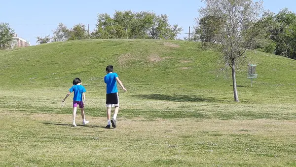
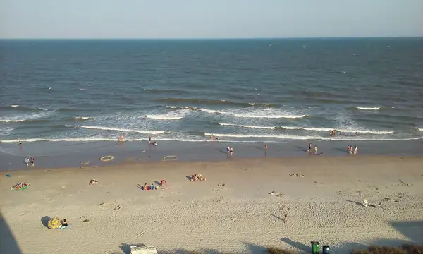
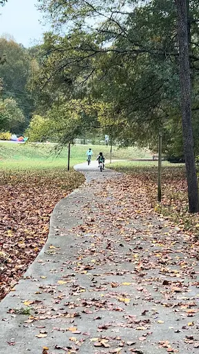
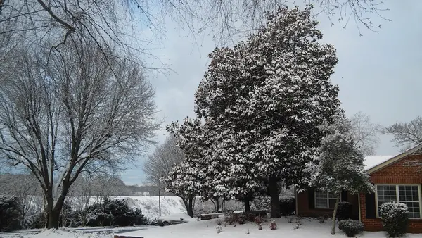

你好 ☕
这里放着我每天会翻一翻的两份小报，都会自己更新。泡杯咖啡，随便看看。
📊 最近的几个数
数据来自 FRED，通常晚一两天发布，房贷利率每周一更；方块里是各项的数据日期，箭头对比上一期。
📷 随手拍









这里放着我每天会翻一翻的两份小报，都会自己更新。泡杯咖啡，随便看看。
数据来自 FRED，通常晚一两天发布，房贷利率每周一更；方块里是各项的数据日期，箭头对比上一期。



